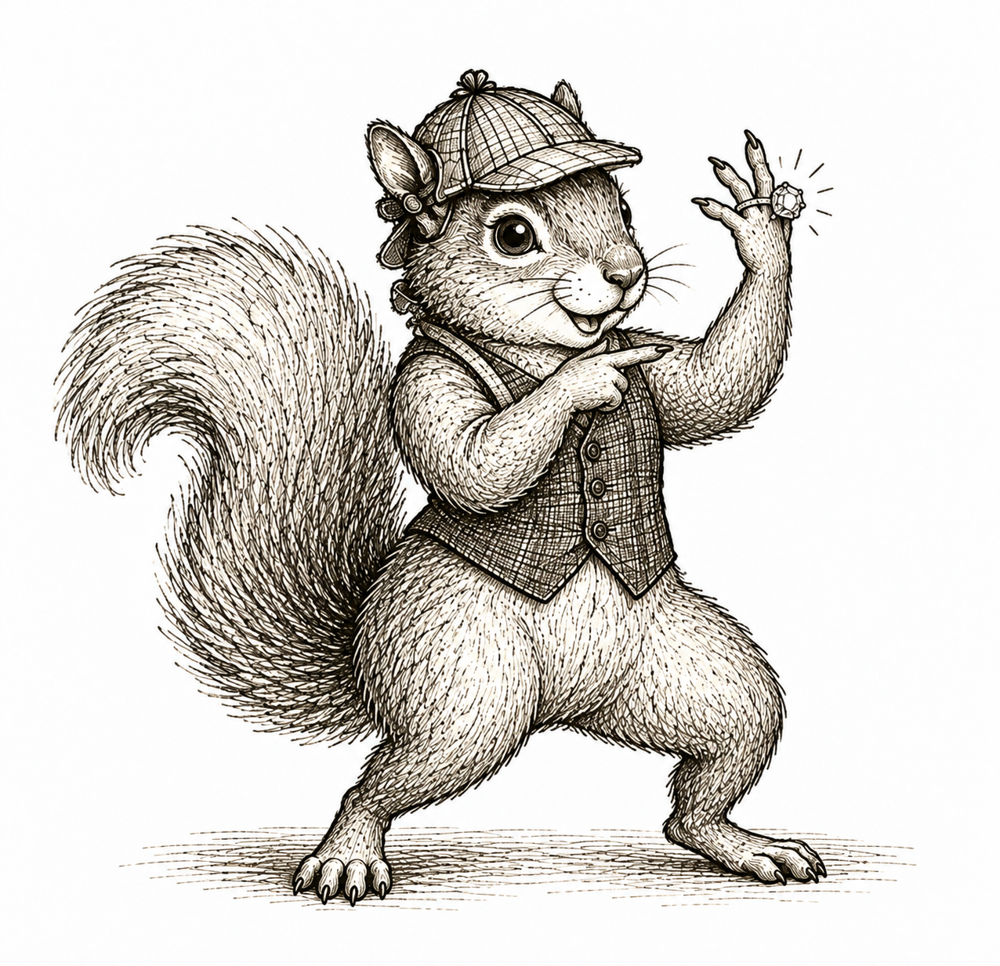

set.seed(661)
n <- 10000
X <- rbinom(n, size = 1, prob = 0.5)
A <- rbinom(n, size = 1, prob = 0.4 + 0.2 * X)
Y <- rbinom(n, size = 1, prob = 0.3 + 0.2 * X - 0.1 * A)
wildfire_data <- data.frame(X, A, Y)A list of assignments

We all have some notion of what it means for one thing to cause another. The trouble is that those notions can be a little fuzzy. That makes it hard to talk to each other when we are not starting from the same place.
One source of this fuzziness is that people have different ideas about what a cause must do. Some people think the outcome must never occur without the cause. Others think the cause must always be followed by the outcome. Still others reserve the word cause for whatever acts most directly on the outcome. Consider what these different notions imply about smoking and lung cancer. Lung cancer can occur in someone who never smoked, many people who smoke never develop lung cancer, and smoking produces cancer through intermediate changes in the body. Depending on which notion we use, any of these facts might lead someone to say that smoking does not cause lung cancer.
A second source of fuzziness is that causal questions ask us to imagine something we cannot observe. We have to imagine what would happen if the same person received a different treatment, even though we can observe only the treatment the person actually received. In effect, we have to imagine a parallel universe or a metaverse. That can feel more like science fiction than science. Yet this imagined comparison is at the heart of the causal questions we want to ask.
We need to bring this fuzziness into focus. More importantly, we need a framework precise enough that we know what one another mean when we make a causal claim. And probabilty is not enough. We saw in the opening chapter that the joint distribution can arise in different ways (\(Y\) from \(X\) or \(X\) from \(Y\)).
No amount of data can tell us which story the world followed. At some point, we have to put a ring on one of them and commit. That commitment is what lets us move beyond probability and statistics and into causal territory.
Writing the story as assignments
We begin by telling a story about how the world generated our data. For now, our story is simply a list describing how each variable gets its value and which other variables might be involved.
This is not such a crazy idea. Whenever we try to explain a public-health problem, we already think about what happened, what happened next, and which conditions might have shaped what happened. Telling a good story can certainly be difficult. The world is complicated, and our story will inevitably leave things out. Still, putting the story into words gives us somewhere to start.
Wildfire-smoke and asthma model
Suppose our data record whether a person’s area experiences unhealthy wildfire-smoke levels, whether the person stays indoors during the period of unhealthy air, and whether the person experiences an asthma exacerbation later that day. Let \(X\) indicate whether the person’s area experiences unhealthy wildfire-smoke levels, let \(A\) indicate whether the person stays indoors during the period of unhealthy air, and let \(Y\) indicate whether the person experiences an asthma exacerbation later that day.
We might tell the following story.
- First, the world generates whether the person’s area experiences unhealthy wildfire-smoke levels.
- Next, the person either stays indoors during the period of unhealthy air or does not. This may depend on the smoke level, together with work, housing, caregiving responsibilities, and other circumstances we have not recorded.
- Finally, the person either experiences an asthma exacerbation or does not. This may depend on the smoke level and whether the person stayed indoors, together with other factors we have not recorded.
The word list is important. In everyday life, we may not care whether eggs appear at the top or bottom of a grocery list. In mathematics, the order is part of the list. Our story therefore says not only how the variables get their values, but also the order in which that happens. If we change the order, we change the story.
Sometimes several variables play the same role in our story. Suppose we record whether a person’s area experiences unhealthy wildfire-smoke levels and whether it experiences extreme heat that day. Both are environmental conditions that are present before the person decides whether to stay indoors. We may not care to place smoke before heat in our story, or heat before smoke. We can instead collect them in the random vector
\[ X=(X_{\text{smoke}},X_{\text{heat}}) \]
and place them together at one point in our story. One item in our list could simply say that the world gives us the environmental conditions in the person’s area. Later items could use either or both components of \(X\). Collecting variables in this way lets the story reflect the common role they play without forcing an order between them.
A hypertension study records systolic blood pressure at a patient’s first visit, whether medication is prescribed at that visit, and systolic blood pressure three months later. Tell a story for how the world generated these three variables. Your story should say what is generated at each step and which other variables might be used.
First, the world gives us systolic blood pressure at the first visit. Next, the patient either receives a medication prescription or does not. The first blood-pressure measurement may help determine that decision. Finally, the world gives us systolic blood pressure three months later. The later measurement may depend on the first measurement and whether medication was prescribed, together with other factors we have not recorded.
We can now write the story for the wildfire-smoke and asthma model as a list of assignments.
\[ X\leftarrow\operatorname{Bernoulli}(0.5), \]
\[ A\leftarrow\operatorname{Bernoulli}(0.4+0.2X), \]
\[ Y\leftarrow\operatorname{Bernoulli}(0.3+0.2X-0.1A). \]
An assignment tells us how one variable gets its value, possibly using the values of other variables.
The first assignment places a \(\operatorname{Bernoulli}(0.5)\) random variable into \(X\). The second places a Bernoulli random variable into \(A\) whose probability is \(0.4\) without unhealthy smoke and \(0.6\) with unhealthy smoke. The third places a Bernoulli random variable into \(Y\) whose probability increases with unhealthy smoke and decreases when the person stays indoors. These probabilities are invented for our example rather than estimated from a particular study.
We will be careful not to treat assignments as ordinary equations. An assignment is a procedure. We use a left arrow, \(\leftarrow\), to be very clear about this point. The procedure takes whatever appears on the right and places it into the variable on the left. For example, the assignment
\[ x\leftarrow4 \]
places the value four into \(x\). Once \(x\) is available, we can carry out the assignment
\[ x\leftarrow x+4. \]
This procedure takes the current value of \(x\), adds four, and places the result back into \(x\). After the two assignments, \(x\) has the value eight.
An equation is something different. It is a statement about whether one thing on the left is the same thing on the right. It can be true or false. For example,
\[ 2=4 \]
is false, whereas
\[ 2+3=\frac{10}{2} \]
is true.
If we replace the assignment arrows in our earlier example with equal signs, we get the statements
\[ x=4 \qquad\text{and}\qquad x=x+4. \]
These statements cannot both be true. In fact, the second is false for every real value of \(x\). The arrow and the equal sign do different jobs.
Ordering the assignments
A collection of assignments can often be read as the world’s recipe for generating the data. This is much like writing code to simulate data ourselves, with each line of code telling us how to generate one variable. Consider again the wildfire-smoke and asthma model. If your professor asked you to write code that generates one observation from this model, each line of code would carry out one assignment.
X <- rbinom(1, size = 1, prob = 0.5)
A <- rbinom(1, size = 1, prob = 0.4 + 0.2 * X)
Y <- rbinom(1, size = 1, prob = 0.3 + 0.2 * X - 0.1 * A)The first line draws one realization from a \(\operatorname{Bernoulli}(0.5)\) random variable and places that realized value into X. The second line uses the value in X to determine the Bernoulli random variable for \(A\), draws one realization from it, and places that value into A. The third line does the same for \(Y\), using the realized values in X and A. Running all three assignments once produces one row of data. Running them repeatedly produces an entire dataset.
Now consider what happens when we place the same assignments in a different order.
\[ A\leftarrow\operatorname{Bernoulli}(0.4+0.2X), \]
\[ X\leftarrow\operatorname{Bernoulli}(0.5), \]
\[ Y\leftarrow\operatorname{Bernoulli}(0.3+0.2X-0.1A). \]
Code that follows this ordering would begin as follows.
A <- rbinom(1, size = 1, prob = 0.4 + 0.2 * X)
X <- rbinom(1, size = 1, prob = 0.5)
Y <- rbinom(1, size = 1, prob = 0.3 + 0.2 * X - 0.1 * A)Assume we begin with an empty R environment. Will this code run? If not, where does it break?
It breaks on the first line. To draw the Bernoulli realization placed into A, R first tries to calculate its probability using X. No value has been placed into X yet.
This is where the order already built into our story becomes especially important. The first ordering can be carried out from top to bottom. The second cannot because it tries to use \(X\) before a value has been placed into it. Some orderings allow us to work through all the assignments from top to bottom, while others do not.
Being able to carry out every assignment top to bottom is such an important idea that we give it a definition:
Topological order. Consider a list of random variables, with one assignment for each variable. The list has a topological order when every variable used in an assignment appears earlier in the list.
ImportantAssumption used throughout this book
We assume that the assignments can be placed in at least one topological order. This assumption allows us to read the assignments as an algorithm for generating the variables.
Return to the wildfire-smoke and asthma model. Its assignments have exactly one topological order, \(X,A,Y\). We must generate \(X\) before \(A\) because the assignment for \(A\) uses \(X\). We must then generate both \(X\) and \(A\) before \(Y\) because the assignment for \(Y\) uses them both.
This example has a unique topological order, but that is not always the case. A collection of assignments can have one topological order, several topological orders, or no topological order at all.
The following are three collections of assignments. For each collection, find a topological order if one exists and determine whether it is unique. The order in which the assignments are displayed is not intended to be an order for generating the variables.
The assignments in Collection A are
\[ Y\leftarrow\operatorname{Normal}(100+5X+2A,25), \]
\[ X\leftarrow\operatorname{Poisson}(2), \]
\[ A\leftarrow\operatorname{Binomial}\{5,\operatorname{logit}^{-1}(-1+0.2X+W)\}, \]
\[ W\leftarrow\operatorname{Bernoulli}(0.3). \]
The assignments in Collection B are
\[ W\leftarrow\operatorname{Exponential}(1), \]
\[ Y\leftarrow\operatorname{Normal}(A,1), \]
\[ X\leftarrow\operatorname{Normal}(Y,1), \]
\[ A\leftarrow\operatorname{Poisson}\{\exp(0.2X+0.1W)\}. \]
The assignments in Collection C are
\[ A\leftarrow\operatorname{Normal}(1+W,1), \]
\[ Y\leftarrow\operatorname{Normal}(X+W+A,1), \]
\[ X\leftarrow\operatorname{Exponential}(1), \]
\[ W\leftarrow\operatorname{Poisson}(1+X). \]
Check your answers.
Collection A has two topological orders,
\[ X,W,A,Y \qquad\text{and}\qquad W,X,A,Y. \]
Both \(X\) and \(W\) must appear before \(A\), and \(A\) must appear before \(Y\). Nothing requires an order between \(X\) and \(W\).
Collection B has no topological order. Generating \(A\) requires \(X\), generating \(Y\) requires \(A\), and generating \(X\) requires \(Y\). Each variable in this cycle would have to appear before another, but none can appear first.
Collection C has the unique topological order
\[ X,W,A,Y. \]
The assignment for \(W\) uses \(X\), the assignment for \(A\) uses \(W\), and the assignment for \(Y\) uses \(X\), \(W\), and \(A\). These relationships force every position in the ordering.
NoteTechnical note on models without a topological order
Requiring a topological order is a restriction on the collection of assignments we consider. Some collections contain feedback or cycles and cannot be carried out by moving through the variables once in a topological order. Those models can be useful, but we will not consider them in this book. From this point forward, at least one topological order exists, and we are allowed to read the assignments as a top-to-bottom algorithm for generating the variables.
Generating a dataset
The assignments can describe how one might generate samples of our random variables. Return to the wildfire-smoke and asthma model. We first draw from the \(\operatorname{Bernoulli}(0.5)\) random variable assigned to \(X\). Suppose this draw gives us \(x=1\). The next assignment becomes
\[ A\leftarrow\operatorname{Bernoulli}\{0.4+0.2(1)\} =\operatorname{Bernoulli}(0.6). \]
Suppose this draw gives us \(a=1\). The final assignment becomes
\[ Y\leftarrow\operatorname{Bernoulli}\{0.3+0.2(1)-0.1(1)\} =\operatorname{Bernoulli}(0.4). \]
Suppose the last draw gives us \(y=0\). One trip through the three assignments has generated the observation \((x,a,y)=(1,1,0)\).
Suppose the first two assignments give us \(x=0\) and \(a=0\). Which random variable do we draw from to generate \(y\), and what observations \((x,a,y)\) could we obtain?
We substitute the realized values \(x=0\) and \(a=0\) into the assignment for \(Y\).
\[ Y\leftarrow\operatorname{Bernoulli}\{0.3+0.2(0)-0.1(0)\} =\operatorname{Bernoulli}(0.3). \]
We draw \(y\) from a \(\operatorname{Bernoulli}(0.3)\) random variable. The draw can give us \(y=1\), producing \((x,a,y)=(0,0,1)\), or \(y=0\), producing \((x,a,y)=(0,0,0)\).
The three assignments generate one observation \((X,A,Y)\). Repeating them turns one observation into a dataset. For a sample of \(n\) people, we write the variables in row \(i\) as
\[ X_i,\qquad A_i,\qquad Y_i. \]
For each person, we generate \(X_i\), then \(A_i\), and then \(Y_i\). Repeating this process for \(i=1,\ldots,n\) produces a dataset with \(n\) rows.
The following code follows the three assignments 10,000 times. Each trip through the list is independent of the others and produces a new row. The first 100 rows form one dataset, the first 1,000 rows form a larger dataset, and all 10,000 rows form a still larger dataset generated by the same assignments.
Here are the first few rows. Each row records one trip through the assignments.
| X | A | Y |
|---|---|---|
| 1 | 0 | 0 |
| 1 | 1 | 0 |
| 1 | 1 | 0 |
| 1 | 1 | 1 |
| 1 | 1 | 0 |
| 1 | 1 | 0 |
Because \(X\), \(A\), and \(Y\) are binary, each row must be one of eight possible combinations. We can count how often every combination occurs in the first 100 rows, the first 1,000 rows, and all 10,000 rows.
| X | A | Y | First 100 rows | First 1,000 rows | All 10,000 rows |
|---|---|---|---|---|---|
| 0 | 0 | 0 | 23 | 226 | 2117 |
| 1 | 0 | 0 | 7 | 95 | 982 |
| 0 | 1 | 0 | 13 | 161 | 1609 |
| 1 | 1 | 0 | 22 | 179 | 1838 |
| 0 | 0 | 1 | 7 | 89 | 921 |
| 1 | 0 | 1 | 10 | 97 | 962 |
| 0 | 1 | 1 | 4 | 35 | 389 |
| 1 | 1 | 1 | 14 | 118 | 1182 |
The assignments have now given us one person, 100 people, 1,000 people, and 10,000 people in exactly the same way. Next, we will use these generated datasets to help us think about the probabilities implied by the assignments.
Assignments determine the probability model
So far, we have used the assignments to generate data. We can also use those data to develop a concrete sense of the probabilities implied by the assignments. In particular, we can ask about the probability of obtaining any one of the eight possible combinations of \(X\), \(A\), and \(Y\).
In the dataset with 100 people, the proportion of rows with a particular combination gives us a first guess for the probability of that combination. We can do the same with the datasets of 1,000 and 10,000 people. The table reports these guesses after rounding.
| X | A | Y | Guess from 100 rows | Guess from 1,000 rows | Guess from 10,000 rows |
|---|---|---|---|---|---|
| 0 | 0 | 0 | 0.23 | 0.226 | 0.212 |
| 1 | 0 | 0 | 0.07 | 0.095 | 0.098 |
| 0 | 1 | 0 | 0.13 | 0.161 | 0.161 |
| 1 | 1 | 0 | 0.22 | 0.179 | 0.184 |
| 0 | 0 | 1 | 0.07 | 0.089 | 0.092 |
| 1 | 0 | 1 | 0.10 | 0.097 | 0.096 |
| 0 | 1 | 1 | 0.04 | 0.035 | 0.039 |
| 1 | 1 | 1 | 0.14 | 0.118 | 0.118 |
The proportions give us a sense of how likely the different combinations are. But we do not need to rely on the generated data to know their probabilities. We can work through the three assignments one at a time.
The assignment for \(X\). Recall that the first assignment is
\[ X\leftarrow\operatorname{Bernoulli}(0.5). \]
It tells us that \(X\) equals one with probability \(0.5\) and zero with probability \(0.5\). We can write both possibilities at once as
\[ P(X=x)=0.5, \qquad x\in\{0,1\}. \]
Because \(X\) is binary, the probability that it equals one is also its expectation.
\[ E[X]=P(X=1)=0.5. \]
In our story, this is the probability that the person’s area experiences unhealthy wildfire-smoke levels.
The assignment for \(A\). The second assignment is
\[ A\leftarrow\operatorname{Bernoulli}(0.4+0.2X). \]
This assignment gives us the distribution of \(A\) after we know \(X\). Its probability of equaling one is
\[ P(A=1\mid X=x)=0.4+0.2x. \]
Its probability of equaling zero is the remaining probability.
\[ P(A=0\mid X=x)=1-(0.4+0.2x)=0.6-0.2x. \]
Because \(A\) is binary, the first of these probabilities is also its conditional expectation.
\[ E[A\mid X]=P(A=1\mid X)=0.4+0.2X. \]
In our story, this is the probability that the person stays indoors, given whether the person’s area experiences unhealthy smoke.
The assignment for \(Y\). The third assignment is
\[ Y\leftarrow\operatorname{Bernoulli}(0.3+0.2X-0.1A). \]
This assignment gives us the distribution of \(Y\) after we know both \(X\) and \(A\). For any \(x,a\in\{0,1\}\),
\[ P(Y=1\mid X=x,A=a)=0.3+0.2x-0.1a \]
and
\[ P(Y=0\mid X=x,A=a)=0.7-0.2x+0.1a. \]
Once again, the probability of one is also the conditional expectation.
\[ E[Y\mid X,A]=P(Y=1\mid X,A)=0.3+0.2X-0.1A. \]
In our story, this is the probability of an asthma exacerbation, given the smoke level and whether the person stays indoors.
We can now use these three pieces to calculate the probability of a particular combination. Consider \(X=1\), \(A=1\), and \(Y=1\). The assignments give us
\[ P(X=1)=0.5, \]
\[ P(A=1\mid X=1)=0.6, \]
and
\[ P(Y=1\mid X=1,A=1)=0.4. \]
Watch what happens when we multiply them.
\[ (0.5)(0.6)(0.4)=0.12. \]
This product is exactly the probability of the combination we started with.
\[ P(X=1,A=1,Y=1)=0.12. \]
As a second example, consider \(X=0\), \(A=0\), and \(Y=1\). The assignments give us
\[ P(X=0)=0.5, \]
\[ P(A=0\mid X=0)=0.6, \]
and
\[ P(Y=1\mid X=0,A=0)=0.3. \]
Multiplying gives
\[ P(X=0,A=0,Y=1) =(0.5)(0.6)(0.3) =0.09. \]
The proportions of rows with these combinations gave us concrete guesses for their probabilities. Following the assignments gives us their exact values.
Use the assignments to calculate the exact probability of each of the eight possible combinations. How do your answers compare with the guesses from the generated datasets?
| \(X\) | \(A\) | \(Y\) | Exact probability |
|---|---|---|---|
| 0 | 0 | 0 | 0.21 |
| 0 | 0 | 1 | 0.09 |
| 0 | 1 | 0 | 0.16 |
| 0 | 1 | 1 | 0.04 |
| 1 | 0 | 0 | 0.10 |
| 1 | 0 | 1 | 0.10 |
| 1 | 1 | 0 | 0.18 |
| 1 | 1 | 1 | 0.12 |
The proportions from the generated datasets should be close to these probabilities. They will not match them exactly because the realized values change each time we generate a dataset. As we move from 100 to 1,000 to 10,000 rows, the proportions generally settle closer to the exact probabilities.
The same calculation works for every possible combination. It illustrates a general rule for working with a list of assignments.
Proposition. A topologically ordered list of assignments determines the joint distribution of its variables. Each assignment supplies the distribution of one variable given the variables it uses. Together, these distributions determine how all the variables are distributed jointly.
NoteOptional technical note on the general decomposition
Take \(K\) real-valued random variables \(X_1,\ldots,X_K\) and a collection of assignments that has a topological order. Place the variables in one such order. Let \(P_j\) be the collection of variables used in the assignment for \(X_j\), and let \(p_j\) be their realized values.
We have already described a conditional distribution using the conditional expectation of an indicator. For fixed values \(p_j\), define
\[ F_{X_j\mid P_j=p_j}(t) := E\left[ 1_{\{X_j\leq t\}} \mid P_j=p_j \right]. \]
This is the conditional cdf of \(X_j\) given \(P_j=p_j\). It is the conditional distribution supplied by the assignment for \(X_j\).
Let \(\mathcal A_j\) be a subset of the possible values of \(X_j\). Using the same Lebesgue–Stieltjes integration introduced in the probability review, the joint probability is
\[ \begin{aligned} &P(X_1\in\mathcal A_1,\ldots,X_K\in\mathcal A_K)\\ &\quad=\int_{\mathcal A_1}dF_{X_1}(x_1) \int_{\mathcal A_2} dF_{X_2\mid P_2=p_2}(x_2) \cdots\\ &\qquad\quad{} \int_{\mathcal A_K} dF_{X_K\mid P_K=p_K}(x_K). \end{aligned} \]
At each step, \(p_j\) is formed from the values already encountered for the variables in \(P_j\). Each integral is therefore taken with respect to the conditional cdf supplied by the corresponding assignment. When a variable is discrete, its integral becomes a sum. When it has a density, its probability weight can be written as \(dF(x)=f(x)\,dx\).
In particular, when all the variables are discrete and we ask about one complete combination,
\[ \begin{aligned} &P(X_1=x_1,\ldots,X_K=x_K)\\ &\qquad=\prod_{j=1}^K P(X_j=x_j\mid P_j=p_j). \end{aligned} \]
The first collection \(P_1\) is empty, so its factor is simply \(P(X_1=x_1)\).
This construction can be generalized beyond real-valued random variables, including random vectors whose components are generated together.
We do not need assignments merely to decompose a joint distribution. For any ordered collection of discrete random variables, the ordinary probability rules give
\[ \begin{aligned} &P(X_1=x_1,\ldots,X_K=x_K)\\ &\qquad=P(X_1=x_1) \prod_{j=2}^K P(X_j=x_j\mid X_1=x_1,\ldots,X_{j-1}=x_{j-1}). \end{aligned} \]
Each variable is conditioned on every variable placed before it. The assignments can make this decomposition simpler. They tell us that the factor for \(X_j\) needs only the variables used in its assignment, rather than every preceding variable.
Consider the following four assignments.
\[ X\leftarrow\operatorname{Bernoulli}(0.4), \]
\[ W\leftarrow\operatorname{Poisson}(2), \]
\[ A\leftarrow\operatorname{Bernoulli}(0.2+0.5X), \]
\[ Y\leftarrow\operatorname{Poisson}(1+W+A). \]
How does the decomposition based on these assignments differ from the general decomposition obtained by placing the variables in the order \(X,W,A,Y\)?
For particular values \(x,w,a,y\), the general decomposition in the order \(X,W,A,Y\) is
\[ \begin{aligned} &P(X=x,W=w,A=a,Y=y)\\ &\qquad=P(X=x) P(W=w\mid X=x) P(A=a\mid X=x,W=w)\\ &\qquad\quad{} P(Y=y\mid X=x,W=w,A=a). \end{aligned} \]
The assignments give us the simpler decomposition
\[ \begin{aligned} &P(X=x,W=w,A=a,Y=y)\\ &\qquad=P(X=x)P(W=w) P(A=a\mid X=x) P(Y=y\mid W=w,A=a). \end{aligned} \]
The assignment for \(W\) does not use \(X\), so its factor does not condition on \(X\). The assignment for \(A\) uses \(X\) but not \(W\). The assignment for \(Y\) uses \(W\) and \(A\) but not \(X\).
The factorization is the probability version of the same procedure we used to generate a row of data. A complicated joint distribution is assembled from the simpler distributions supplied by the individual assignments.
The same decomposition applies when not all the variables are discrete. Return to the wildfire-smoke and asthma model, but now let \(Y\) be the person’s peak expiratory flow later that day rather than an indicator of an asthma exacerbation. Consider the assignments
\[ X\leftarrow\operatorname{Bernoulli}(0.5), \]
\[ A\leftarrow\operatorname{Bernoulli}(0.4+0.2X), \]
\[ Y\leftarrow\operatorname{Normal}(400-50X+20A,900). \]
The assignment for \(Y\) tells us both its conditional mean and its entire conditional distribution. Its conditional mean is
\[ E[Y\mid X,A]=400-50X+20A. \]
This should look familiar. It is a linear regression function for \(Y\) given \(X\) and \(A\). The assignment says more than the regression function alone. It also specifies that the conditional distribution of \(Y\) is normal with variance \(100\).
For example, consider the probability that \(X=1\), \(A=1\), and \(Y\) lies between \(340\) and \(400\). We can decompose this joint probability as
\[ \begin{aligned} &P(X=1,A=1,340\leq Y\leq400)\\ &\qquad=P(X=1) P(A=1\mid X=1) P(340\leq Y\leq400\mid X=1,A=1). \end{aligned} \]
The first two assignments give us \(0.5\) and \(0.6\). When \(X=1\) and \(A=1\), the third assignment places a \(\operatorname{Normal}(370,900)\) random variable into \(Y\). Therefore,
\[ \begin{aligned} &P(X=1,A=1,340\leq Y\leq400)\\ &\qquad=(0.5)(0.6) P\{340\leq\operatorname{Normal}(370,900)\leq400\}\\ &\qquad\approx(0.5)(0.6)(0.683)\\ &\qquad\approx0.205. \end{aligned} \]
The outcome is continuous, so we ask for the probability that \(Y\) falls in an interval rather than the probability that it equals one particular value. The decomposition otherwise follows the assignments in the same way.